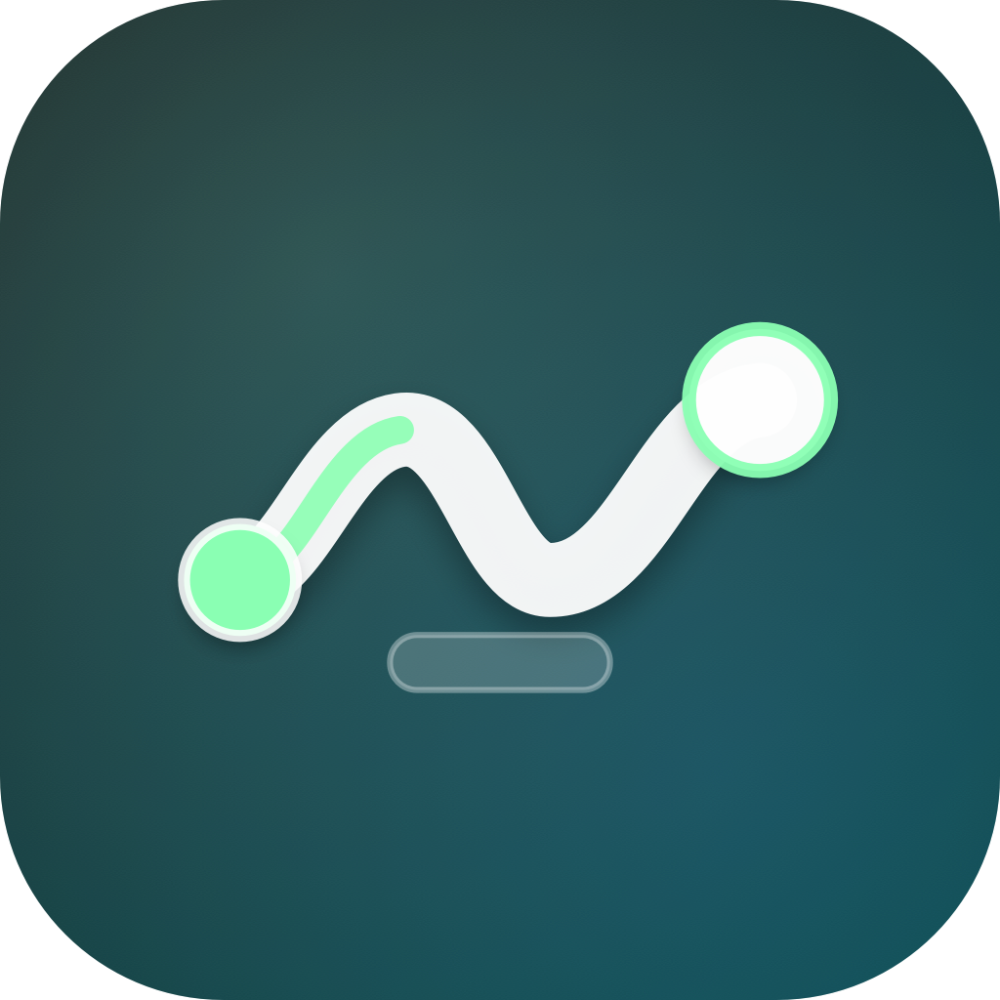
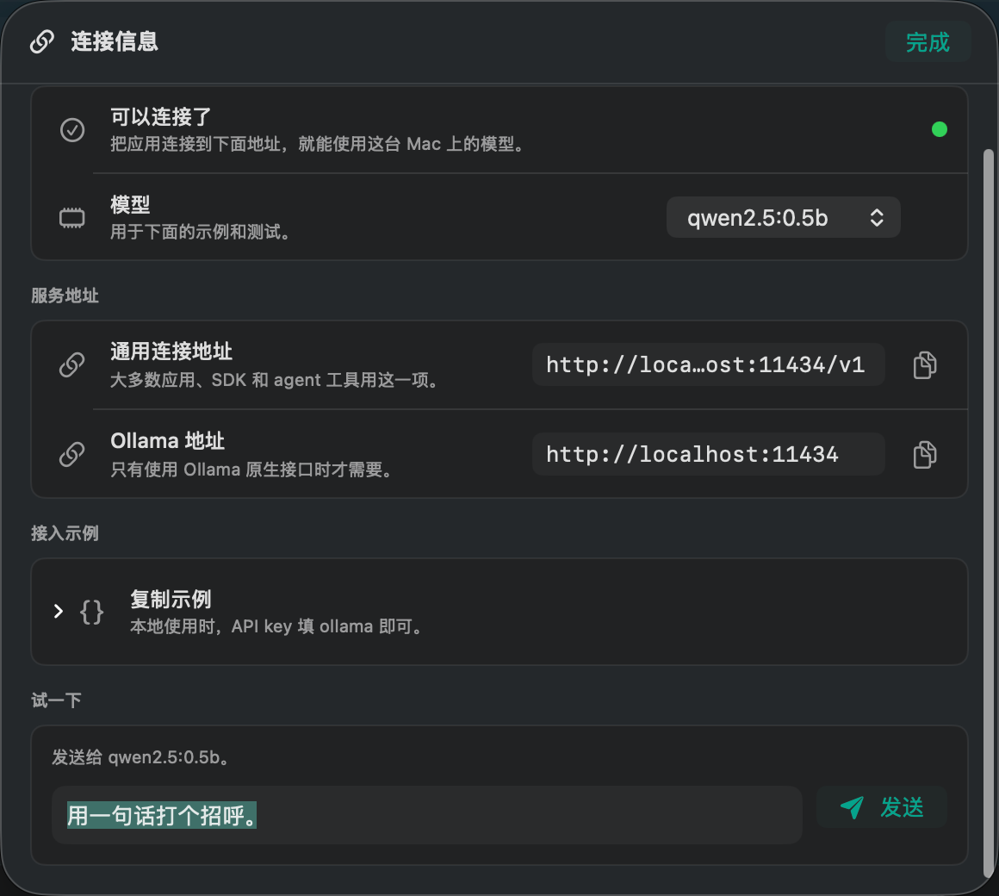
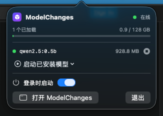

Browse models with context
Search the live Ollama library, compare model types, see estimated RAM fit, and pick a variant without opening the terminal.

ModelChangesNative macOS app for local AI
Browse open models, deploy them to this Mac, and connect any OpenAI-compatible app to a private local endpoint.


Why it exists
ModelChanges turns the Ollama model universe into a simple Mac control center: choose a model, load it, test it, and hand the endpoint to your tools.
Search the live Ollama library, compare model types, see estimated RAM fit, and pick a variant without opening the terminal.
Download and load a model in one flow, then start, stop, or remove it from a compact menu bar control.
Copy local URLs, Python examples, curl examples, and capability tests for the selected model.
Workflow
The app keeps the moving parts visible without making regular users learn server commands.
Filter by chat, code, vision, reasoning, embeddings, or audio.
Deploy the model and watch memory usage from the dock.
Use the OpenAI-compatible URL in apps, SDKs, or agents.
Download
The installer quits the old app, installs the latest release into Applications, clears quarantine, and opens ModelChanges.
curl -fsSL https://7757.github.io/ModelChanges/install.sh | sh
Release notes